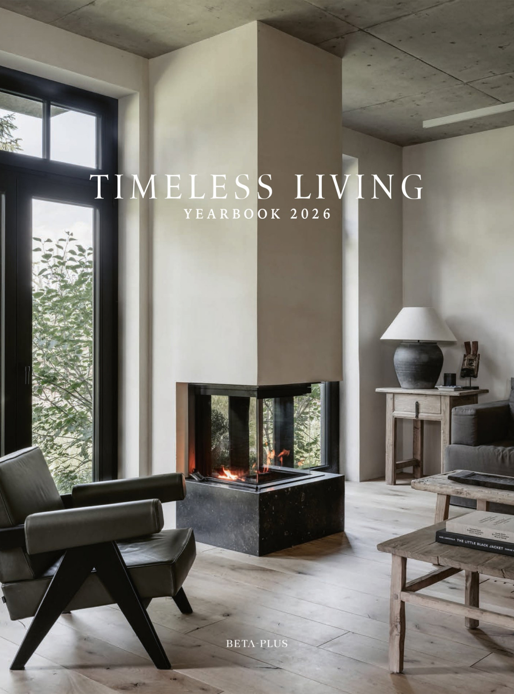
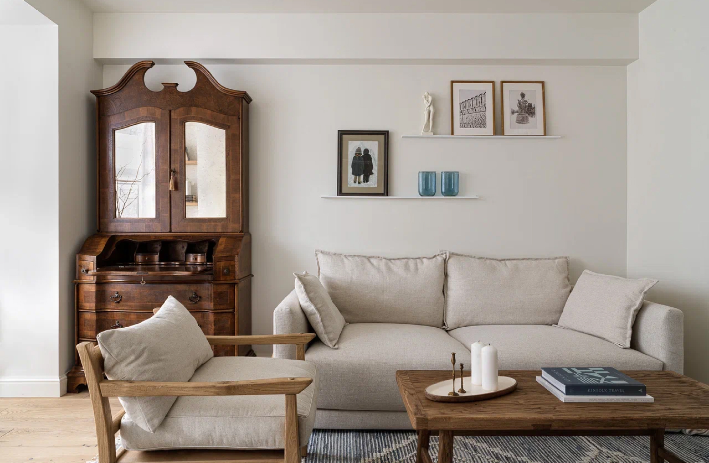
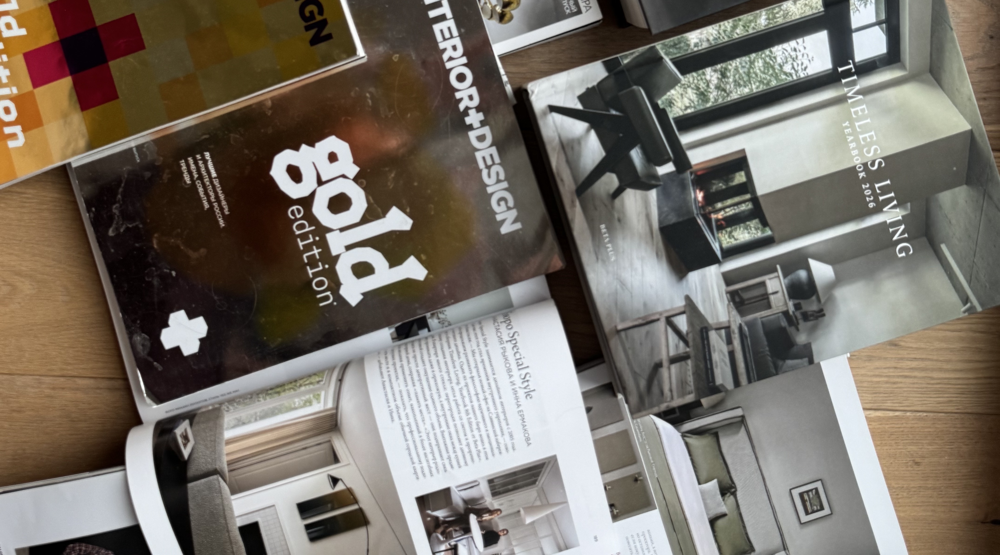
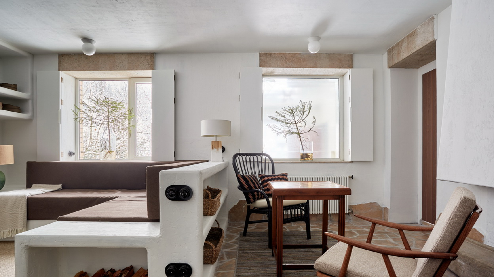
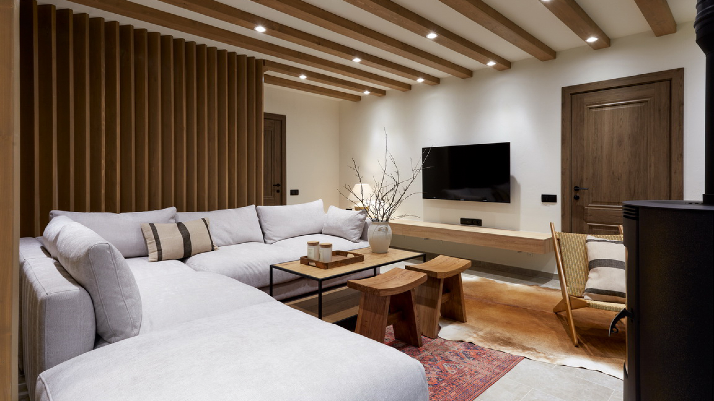
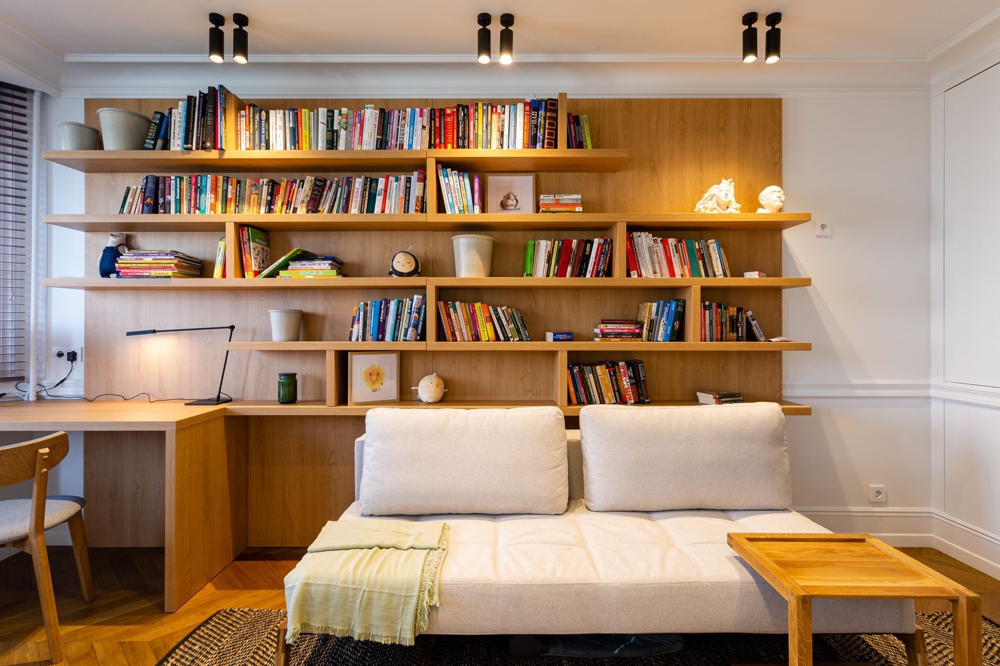
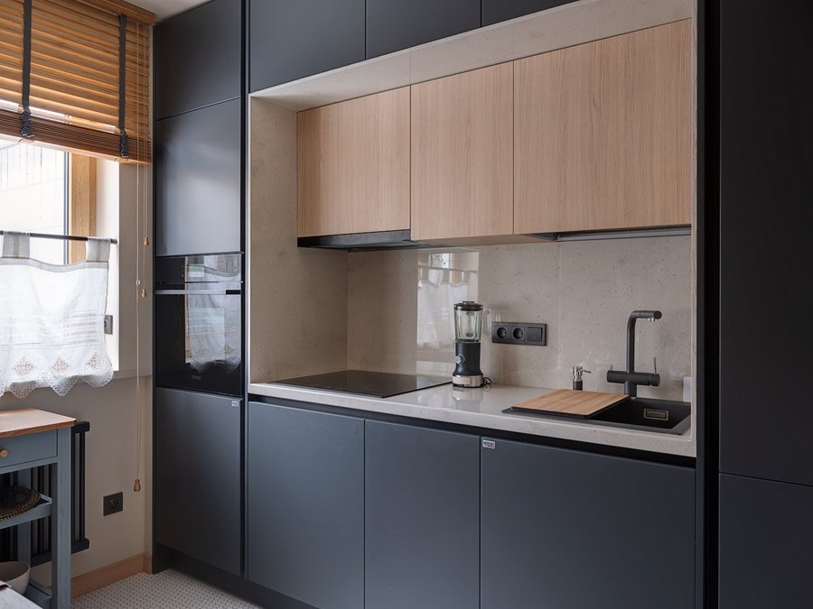

В сборник включен проект небольшой квартиры у Новодевичьего монастыря



В сборник включен проект небольшой квартиры у Новодевичьего монастыря


Авторы проекта превратили гостиную в греческий дворик – светлое патио с очагом, обнимающей мебелью и акцентами в цветах терракоты и охры.

Герои этого выпуска стараются всё делать вместе. Поэтому в их гостиной во главе угла - тепло, уют и семейные ценности.

Все по полочкам: превращение гостиной в домашнюю библиотеку

Холодную кухню залили теплым сливочным цветом, а границы раздвинули с помощью кухонных фасадов цвета сажи.
